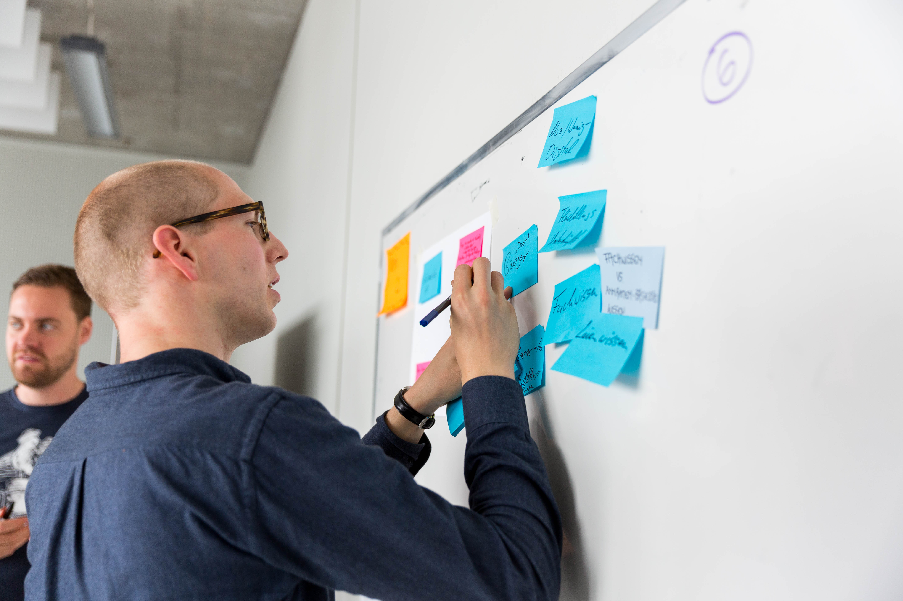
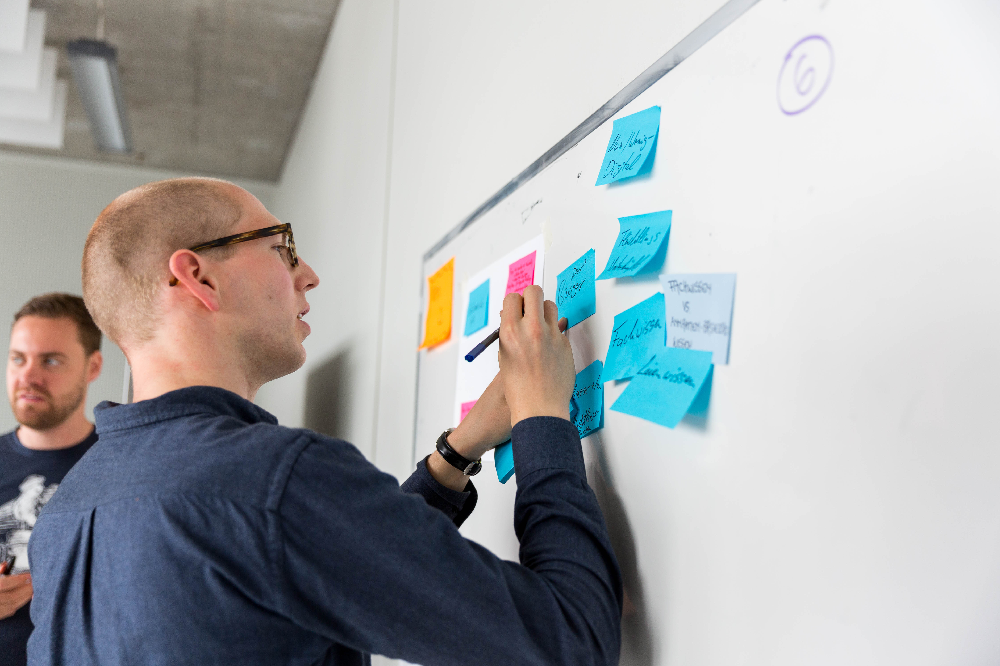
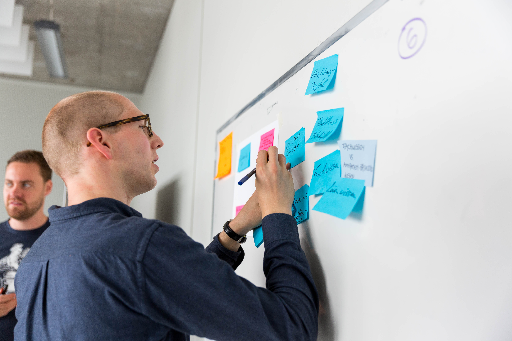

Wie kann Software dabei helfen, Sach- und Zeitspenden besser zu koordinieren? Wie kann neue Technologie dabei helfen den Asylprozess leichter zu verstehen? Wie kann die Kommunikation zwischen Geflüchteten und HelferInnen verbessert werden? - Diesen und weiteren Fragen haben wir uns im Rahmen der Digital Refugee Days gewidmet.
Wie können wir Ihnen helfen?
Im ‘Digital Refugee Lab’ haben wir Menschen zusammengebracht, die in unterschiedlichen Kontexten mit Geflüchteten arbeiten oder selbst Geflüchtete sind. Wir wollten digitale Hilfsmittel und kreative Ansätze nutzen, um Hilfsorganisationen, Institutionen und Initiativen bei ihrer täglichen Arbeit und Geflüchtete in ihrem Alltag zu unterstützen. Dabei wollten wir das Rad nicht komplett neu erfinden, sondern auch auf vorhandene Projekte aufbauen und diese weiterentwickeln. Unser Ziel ist es, die Zusammenarbeit zwischen technisch versierten Communitys, Ehrenamtlichen im Bereich der Flüchtlingshilfe, Geflüchteten sowie öffentlichen Verwaltungen zu verstetigen und auszubauen. Zu unseren zwei Workshops haben wir UnterstützerInnen lokaler Flüchtlings-Initiativen, Geflüchtete, Mitarbeiter aus der städtischen Verwaltung sowie die Civic Tech Community eingeladen. In den Workshops haben wir das gegenseitige Kennenlernen untereinander und den Austausch von Erfahrungen und Problemen unterstützt. Wir haben gemeinsam spannende Problemstellungen identifiziert und konkrete Projektideen entwickelt. Im Fokus der Arbeit unsere Labs stand und steht ein nutzer- und problemorientiertes Vorgehen, d. H. wir versuchen die Anwendungen möglichst in enger Zusammenarbeit mit den späteren Nutzern zu entwickeln, um den Nutzen möglichst optimal auszuloten und anzupassen. Das ist natürlich manchmal schwieriger in der Praxis als in der Theorie.
Der Workshop-Auftakt wird am 22. Juni von 10-14 Uhr stattfinden. Der Veranstaltungsort ist noch offen und wird den Anforderungen entsprechend ausgewählt. Aller Voraussicht nach werden die Räumlichkeiten von einem unserer Kooperationspartner in der Sternschanze/Neustadt genutzt.

Mit rund 25 Teilnehmern aus verschiedenen Institutionen, Helferorganisationen, Behörde und Geflüchteten hatten wir ein bunte Mischung an Leuten.
Wir sind eine Gruppe Ehrenamtlicher im Code for Hamburg Lab, das Teil des bundesweiten Code for Germany Netzwerkes ist. Code for Germany gehört zur Open Knowledge Foundation Deutschland und ist ein Netzwerk aus Ehrenamtlichen, die ihre Fähigkeiten im Bereich Softwareentwicklung, Design, Stadtplanung, Kommunikation uvm. für ihre Städte und Nachbarschaft einsetzen.
Weitere Infos zum Projekt 'Digital Refugee Labs' findet ihr unter:
codefor.de/digitalrefugeelabs Newsletter PDF DokumentBei Interesse schreib uns am besten hier:
lab@codeforhamburg.org